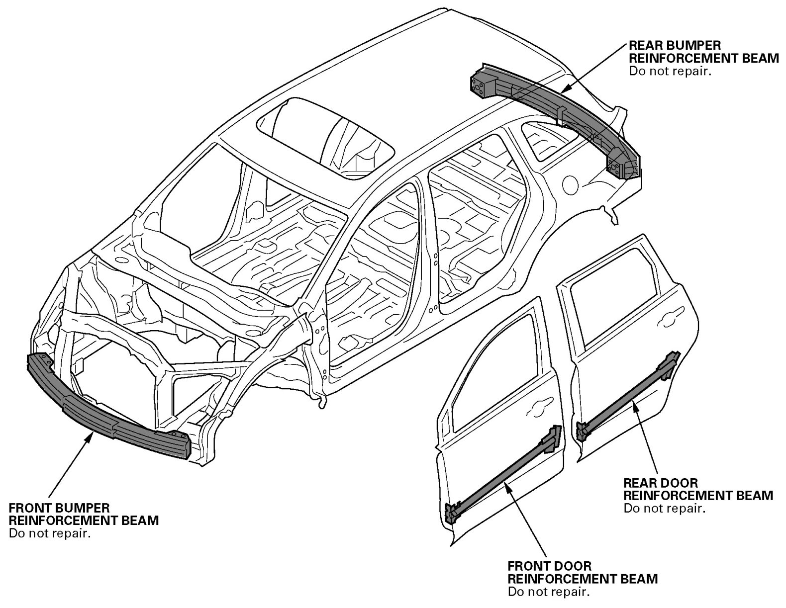

Front Door: Description and Operation
General InformationDoor and Bumper Reinforcement Beams
Door and bumper reinforcement beams used on Acura vehicles are made from a metal equivalent to high strength steel.
If high strength steel is heated, the strength of the steel will be reduced. If high strength steel is damaged, as in a vehicle accident, where the door and bumper reinforcement beams are bent, the beams may crack attempting to straighten them.
For this reason, door and bumper reinforcement beams should NEVER be repaired; they should be replaced if they are damaged.
NOTE: If a door beam is damaged, the whole door panel assembly should be replaced.
